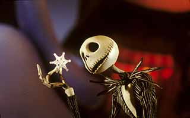
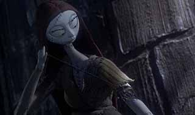
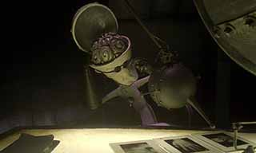
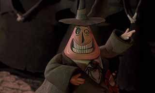
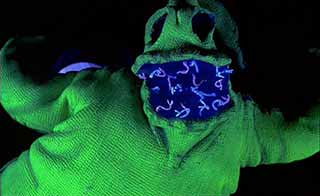
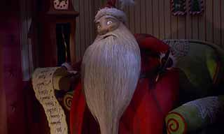

Summary
The Nightmare Before Christmas, often promoted as Tim Burton's The Nightmare Before Christmas, is a 1993 American stop motion musical fantasy film directed by Henry Selick and produced/co-written by Tim Burton. It tells the story of Jack Skellington, a being from Halloween Town who opens a portal to Christmas Town and decides to celebrate the holiday, with some dastardly and comical consequences.
The Nightmare Before Christmas originated in a poem written by Tim Burton in 1982, while he was working as a Disney animator. With the success of Vincent in the same year, Disney started to consider developing The Nightmare Before Christmas as either a short film or 30-minute television special. Over the years, Burton's thoughts regularly returned to the project, and in 1990, he made a development deal with Disney. Production started in July 1991 in San Francisco. Disney decided to release the film under their Touchstone Pictures banner because they thought the movie would be "too dark, and scary for kids."
Cast and Characters
Jack Skellington
Chris Sarandon as Jack Skellington: A skeleton known as the Pumpkin King of Halloween Town. He owns a ghost dog named Zero, who has a small, glowing jack-o'-lantern nose. Danny Elfman, the film's composer, provides Jack's singing voice. He also voices Barrel and the Clown with the Tear-Away Face.
Sally
Catherine O'Hara as Sally: A rag doll-like creation of Finklestein and the growing love interest of Jack. O'Hara also provided the voice of Shock. Burton previously worked with O'Hara on Beetlejuice (1988).
Doctor Finklestein
William Hickey as Doctor Finklestein: A mad scientist and the “father” of Sally.
The Mayor
Glenn Shadix as Mayor of Halloween Town: An enthusiastic leader who conducts town meetings. His wild mood swings from happy to distraught causes his head to spin between a happy and sad face. Burton had also previously worked with Shadix on Beetlejuice.
Oogie Boogie
Ken Page as Oogie Boogie: A villainous bogeyman in Halloween Town who has a passion for gambling.
Santa Claus
Ed Ivory as Santa Claus: The leader of Christmas Town. Santa Claus is responsible for the annual celebration of Christmas, at which time he delivers presents to children around the world.
The cast also features Paul Reubens, Kerry Katz, Randy Crenshaw, Debi Durst, Sherwood Ball, and Greg Proops voicing various characters. Patrick Stewart recorded narration for a prologue and epilogue. While not used in the final film, the narration is included on the soundtrack album.
Character Design
The filmmakers constructed 227 puppets to represent the characters in the movie, with Jack Skellington having around four hundred heads, allowing the expression of every possible emotion. Sally's mouth movements “were animated through the replacement method. During the animation process, [...] only Sally's face mask was removed in order to preserve the order of her long, red hair. Sally had ten types of faces, each made with a series of eleven expressions (e.g. eyes open and closed, and various facial poses) and synchronised mouth movements.”
The stop motion figurine of Jack Skellington was reused in James and the Giant Peach (also directed by Selick) as a dead pirate captain.